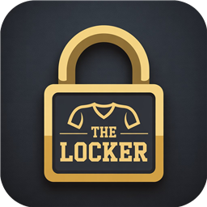

Scan. Catalogue. Collect.
The Locker is a collection app for football shirts: photograph a shirt, let AI catalogue it, then manage your whole Locker with search, filters, stats, backups and a shareable kit card.
Something not working, or an idea to make The Locker better? Write to us. We usually reply within 2 business days. Please include your device model, the iOS or Android version and a short description of the problem.
Only on your device. The Locker has no accounts and no cloud sync. If you lose or reset your phone, the collection is lost unless you made a backup. Go to Stats → Export backup regularly and keep the file somewhere safe (Files, iCloud Drive, Google Drive, email).
On the old phone use Stats → Export backup and save the file. On the new phone install The Locker, open Stats → Restore from backup and pick the file. The free plan restores up to 5 kits; The Locker Pro restores them all.
Open Stats and tap Restore purchases while signed in to the same Apple ID (or Google account) you used to buy. Pro is a one-time purchase, not a subscription.
To keep the AI feature available and affordable, scans are limited (about 10 per hour). When you reach the limit the + button shows an hourglass with a countdown that slowly fills up. You can still browse and edit your collection while you wait.
AI results are suggestions. Check every field on the review screen before saving, and edit a saved kit any time with the pencil button on its page.
The photo is sent over an encrypted connection to our server and on to Google Gemini for analysis. We do not store it. See the Privacy Policy for details.
Open Stats → Delete Account to remove every kit and photo from your device. There is nothing to delete on our servers because there are no accounts. To ask about server-side records linked to your device, email us.